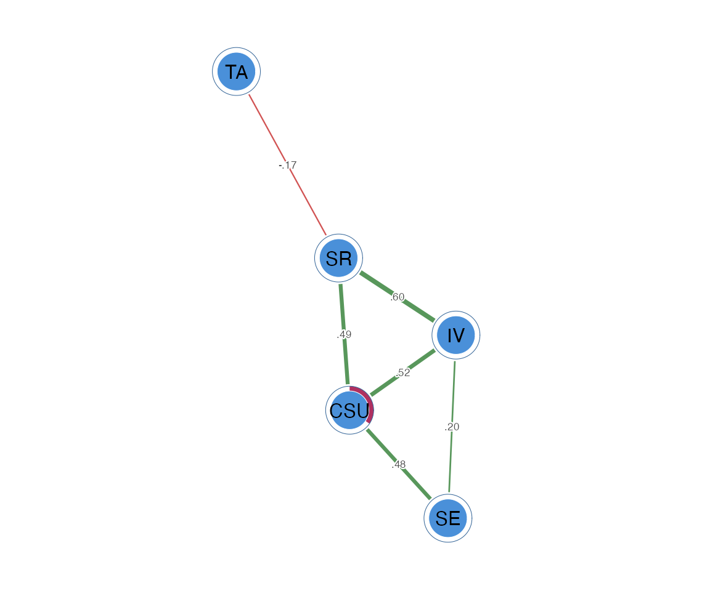

A mixed graphical model
(method = "mgm") estimates a network over variables of
different types in the same model – here continuous (Gaussian)
and binary nodes. Each node is regressed on all the others with the
L1-penalised GLM that matches its type (linear for continuous, logistic
for binary), and the asymmetric estimates are symmetrised by the AND
rule. It is equivalent to mgm::mgm() for the Gaussian +
binary case, and self-certifies via the nodewise GLM residual.
We keep three constructs continuous (CSU,
IV, SE) and treat two as binary
(SR, TA) – as if self-regulation and test
anxiety had been recorded as high/low. A small helper dichotomises the
binary pair with dichotomize(method = "rank") and binds
them to the three continuous constructs.
mixed_scores <- function(x) {
d <- as.data.frame(x)
b <- dichotomize(d[c("SR", "TA")], method = "rank")
data.frame(d[c("CSU", "IV", "SE")], SR = b[, "SR"], TA = b[, "TA"])
}
mixed <- mixed_scores(SRL_GPT)
head(mixed)
#> CSU IV SE SR TA
#> 1 5.307692 5.666667 5.777778 0 1
#> 2 5.846154 6.444444 6.000000 1 1
#> 3 6.615385 6.666667 6.222222 1 0
#> 4 5.692308 6.555556 6.333333 0 1
#> 5 4.384615 5.555556 4.888889 0 1
#> 6 4.846154 5.444444 5.666667 0 0psychnet() auto-detects each column’s type and fits the
matching GLM nodewise:
fit <- psychnet(mixed, method = "mgm")
fit
#> <psychnet> mgm network
#> nodes: 5 edges: 6 (undirected)
#> optimality (KKT residual): 6.12e-08
certificate(fit)
#> method certificate kind certified
#> 1 mgm 6.120379e-08 kkt TRUEThe edges, and the per-node type and predictability (R-squared for
the Gaussian nodes, normalised accuracy nCC for the binary
ones):
as.data.frame(fit)
#> from to weight
#> 1 CSU IV 0.5178986
#> 2 CSU SE 0.4761172
#> 3 IV SE 0.1974848
#> 4 CSU SR 0.4857058
#> 5 IV SR 0.5989477
#> 6 SR TA -0.1657993
net_predict(fit, data = mixed)
#> node type metric predictability accuracy
#> 1 CSU gaussian R2 0.8150679 NA
#> 2 IV gaussian R2 0.7722005 NA
#> 3 SE gaussian R2 0.7055418 NA
#> 4 SR binary nCC 0.7400000 0.87
#> 5 TA binary nCC 0.0000000 0.50A binary–binary edge carries the sign of its nodewise-logistic
coefficient, which mgm::mgm() leaves undefined, so compare
such edges on abs(). The edge magnitudes otherwise match
mgm::mgm() closely.
Pass the network object to cograph::splot() with
psych_styling = TRUE (green = positive, red = negative);
ask for the predictability ring with
predictability = TRUE.
cograph::splot(fit, psych_styling = TRUE, predictability = TRUE)
method = "mgm" (v0.1) supports Gaussian and binary
nodes; a multi-level categorical column is rejected with a clear message
(one-hot encode it first). See net_crosswalk("mgm") for the
argument map against mgm::mgm().